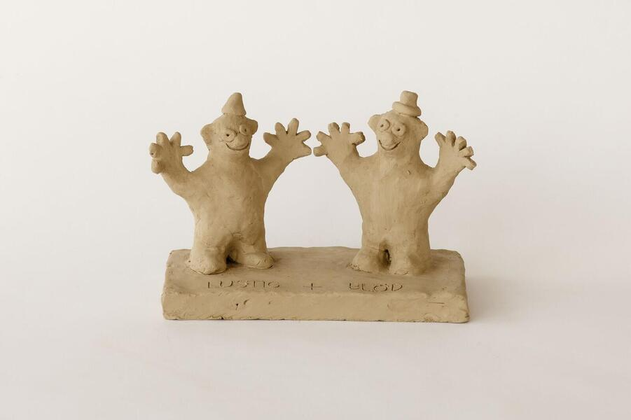

Suddenly This Overview
by Peter Fischli and David Weiss
––––––––––––
In 1981, Fischli and Weiss began their first sculptural series, a group of objects called Suddenly This Overview, with which they would seek to inventory the whole of human history and knowledge, no matter how significant or trite. To realize this impossible scheme, they turned to the unglamorous medium of unfired clay, a popular craft material rarely used in the realm of fine art. For Fischli and Weiss, clay was perfectly suited to making quick three-dimensional sketches that they could hand-mold and easily revise.
The resulting tableaux, which the artists called a “subjective encyclopedia,” include an idiosyncratic selection of scenes, ranging from mythic events, like the parting of the Red Sea, to trivial moments, like waiting for an elevator. Fischli and Weiss accompanied each object with a title that often functions like a punch line or a caption. For instance: Mr. and Mrs. Einstein Shortly after the Conception of their Son, the Genius Albert; or Mick Jagger and Brian Jones Going Home Satisfied after Composing “I Can’t Get No Satisfaction.” Titles such as these provide another layer of content not evident when viewing the sculptures alone.
Other pieces in the series pick up on the artists’ favored idea of “popular opposites,” illustrating and ultimately questioning conventional pairs of contrasting ideas. In Small and Big, for example, they molded a mouse and an elephant at equal size. Another work, called High and Low, features two little dogs, one standing on its hind legs, the other on all fours. Such juxtapositions wittily subvert the false dichotomies that Fischli and Weiss identified as central to popular philosophy, asking viewers to rethink their most basic assumptions about everyday life.
Following their first gallery presentation in 1981, Fischli and Weiss continued to expand the encyclopedic scope of Suddenly This Overview, creating over six hundred objects over more than thirty years. Gathered together in large groups like the one on view here, the project gives an accurate, if eccentric, depiction of the incomprehensible profusion and variety of events and ideas that shape the world.